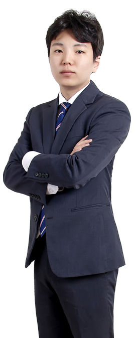

신승세무법인 세무사
20년 이상 경력의 숙련된 전문가로 구성
-

- 대표세무사양해운
- 국세공무원 교육원 상속세, 증여세법 교수 역임
- 국세청 재산제세 분야 26년 근무
- 국세청 법규과 법령 해석 담당
- 국세청 재산세과 기획 담당
- 국세청 심사1과 불복심리 담당
- 양도소득세, 증여세, 상속세 법령해석
- 1세대 1주택 비과세 검증프로그램 개발 (국세청)
- 일선 세무서 재산세과 실무 담당
-

- 대표세무사황재윤
- 前 주중 한국대사관 세무협력관
- 前 국세청 납세보호관 (국장) 직무대행
- 前 중부청 국세심사위원
- 前 국세청 심사 1 담당관
- 前 조세심판원 조사관
- 前 국세청 부가세 과장
- 前 대구청 조사1국장
- 前 서울청 감사관, 조사과장
- 前 중부청 조사, 특별조사과장
-

- 대표세무사변기영
- 신승세무법인 대표
- 세무회계 컨설팅 19년
- 외국투자기업 세무조사 자문
- 절세 장단기 계획 수립
- 기업 세무회계 컨설팅
- 주요 계약 세무문제 검토 및 자문
- 개인기업 법인전환 컨설팅
-

- 대표세무사전명호
- 심판, 감사 청구, 조세소송 자문
- 前 중부지방국세청
- 前 화성세무서 재산세과장
- 前 시흥세무서 부가세과장
- 세무조정 및 성실신고 컨설팅
- 재산취득원천 조사 대응
- ENTI 모의세무조사 컨설팅
- 법인세 정기, 수시 세무조사 대응
-

- 대표세무사박호열
- 조세불복, 세금면책 자문
- 前 국세청 소득세과
- 前 국세청 부가세과
- 前 강남, 반포 세무서
- 양도소득세 절세방안 컨설팅
- 상속세 및 증여세 불복업무 자문
- 개인 세무조사 대응 방안 자문
- 개인제세 이의신청 및 과세전적부심사청구
-

- 회계사오종석
- 공인회계사
- 국제조세 & 해외 세무신고 자문
- 고려대학교 경제학 전공
- 서울대학교 대학원 경영학 석사
- 중국인민대학교 경제학 박사
- 국내/해외 M&A 및 투자인수 자문
- 세무진단, 세무조사, 세무자문
- 세무회계컨설팅 22년 경력
-

- 회계사안장순
- 공인회계사
- 법인감사 및 세무진단
- M&A 및 투자인수 자문
- 기업 설립 및 청산 자문
- 기업 재무회계 자문
- 세무조정 및 성실신고 컨설팅
- 세무회계컨설팅 20년 경력
-

- 세무사송광호
- 재신제세 컨설팅 총괄
- 국세청 근무 10년
- 기업 주식평가 자문
- 기업 비상장주식평가 자문
- 기업 자산관리 세무플레닝
- 양도세, 증여세, 상속세 절세 컨설팅
- 과세자료 소명 & 과세전 적부심 청구 자문
-
- 세무사심지현
- 한중 세무회계 컨설팅
- 중국법령정보센터 세무상담
- 한국지사 세무회계 검토 자문
- 중문 재무보고서 검토 자문
- 세무신고 및 연말정산 자문
-

- 세무사이인준
- 재산제세 신고 및 컨설팅
- 양도소득세 절세방안 컨설팅
- 1가구 1주택 비과세 절세 컨설팅
- 1가구 2주택 양도소득세 절세방안 자문
- 다주택자 양도세 절세방안 자문
- 재개발 재건축 조합 절세 컨설팅
-

- 세무사유수현
- 재산제세 신고 및 컨설팅
- 상속세, 증여세 절세방안 컨설팅
- 가업승계 상속 절세방안 컨설팅
- 비사업토지 절세방안 컨설팅
- 사전증여 절세방안 컨설팅
- 상속세 신고 및 납부 자문
전화상담
평일 오전 10시 ~ 오후 6시
토,일,공휴일 휴무
02-3452-0608
전화걸기
채팅상담
수임처 상담/세무상담/신규상담
쉽고 빠르게 증빙자료 전송가 가능
상담하러가기